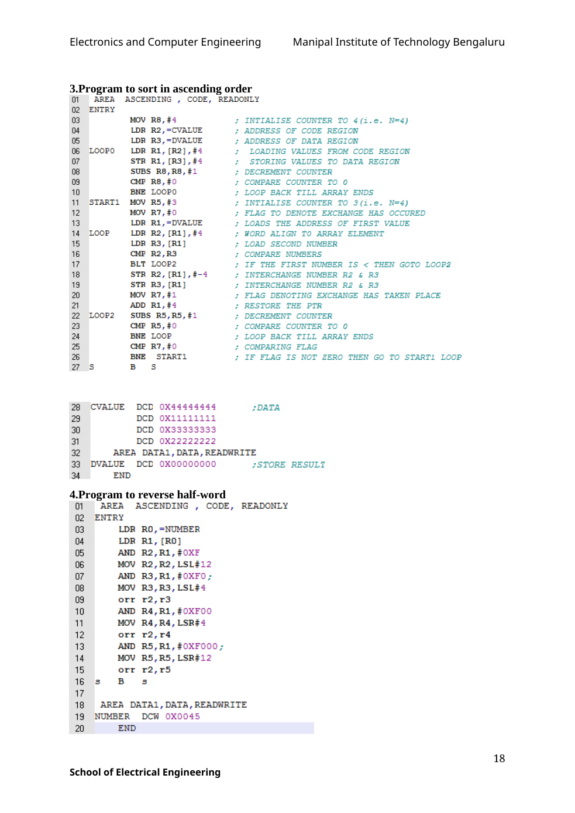

Copyable text transcription
OCR-generated from the original manual page. Check register names, labels, constants and punctuation against the reference image before using.
Electronics and Computer Engineering Manipal Institute of Technology Bengaluru
3.Program to sort in ascending order
01 AREA ASCENDING , CODE, READONLY
02 ENTRY
03 MOV RS, #4 ¢ INTIALISE COUNTER TO ¢(i.e. N=4)
04 LDR R2,=CVALUE ¢ ADDRESS OF CODE REGION
05 LDR R3,=DVALUE ; ADDRESS OF DATA REGION
06 LOOPO LDR Ri, [R2],#4 ; LOADING VALUES FROM CODE REGION
07 STR R1, (R3], #4 ; STORING VALUES TO DATA REGION
08 SUBS R8,R8, #1 ¢ DECREMENT COUNTER
CMP R8, #0 ¢ COMPARE COUNTER TO 0
10 BNE LOOPO ; LOOP BACK TILL ARRAY ENDS
11 START1 MOV R5,#3 ; INTIALISE COUNTER TO 3(i.e. N=4)
12 MOV R7, #0 ¢ FLAG TO DENOTE EXCHANGE HAS OCCURED
13 LDR R1,=DVALUE ¢ LOADS THE ADDRESS OF FIRST VALUE
14 LOOP LDR R2, [R1], #4 ¢ WORD ALIGN TO ARRAY ELEMENT
15 LDR R3, (R1] ; LOAD SECOND NUMBER
16 CMP R2,R3 ; COMPARE NUMBERS
7 BLT LOOP2 ¢ IF THE FIRST NUMBER IS < THEN GOTO LOOP2
18 STR R2, [Ri], #-4 ¢ INTERCHANGE NUMBER R2 & R3
19 STR R3, [R1] ¢ INTERCHANGE NUMBER R2 & R3
20 MOV R7,#1 ; FLAG DENOTING EXCHANGE HAS TAKEN PLACE
21 ADD R1, #4 ; RESTORE THE PTR
22 LOOP2 SUBS R5,R5,#1 ¢ DECREMENT COUNTER
23 CMP R5, #0 ; COMPARE COUNTER TO 0
24 BNE LOOP ¢ LOOP BACK TILL ARRAY ENDS
25 CMP R7, #0 ; COMPARING FLAG
26 BNE START1 ¢ IF FLAG IS NOT ZERO THEN GO TO START1 LOOP
aos BS
28 CVALUE DCD 0x44444444 ;DATA
23 DCD 0X11111111
30 DCD 0X33333333
31 DCD 0X22222222
32 AREA DATA1, DATA, READWRITE
33 DVALUE DCD 0x00000000 ;STORE RESULT
34 END
4.Program to reverse half-word
01 AREA ASCENDING , CODE, READONLY
02 ENTRY
03 LDR RO,=NUMBER
04 LDR R1, [RO]
05 AND R2,R1, #0XF
06 MOV R2,R2,LSL#12
07 AND R3,R1, #0XFO;
08 MOV R3,R3,LSL#4
09 orr r2,r3
10 AND R4,R1, #0XFO0
"1 MOV R4,R4,LSR#4
12 orr r2,r4
13 AND R5,R1, #0XF000 ;
14 MOV R5,R5, LSR#12
15 orr r2,r5
16s Bs
V7
18 AREA DATA1, DATA, READWRITE
19 NUMBER DCW 0x0045
20 END
18
School of Electrical EngineeringView original manual page (reference)
